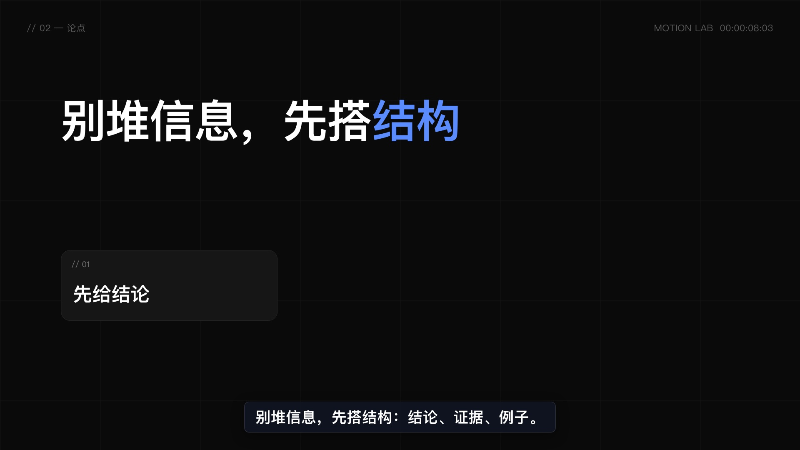
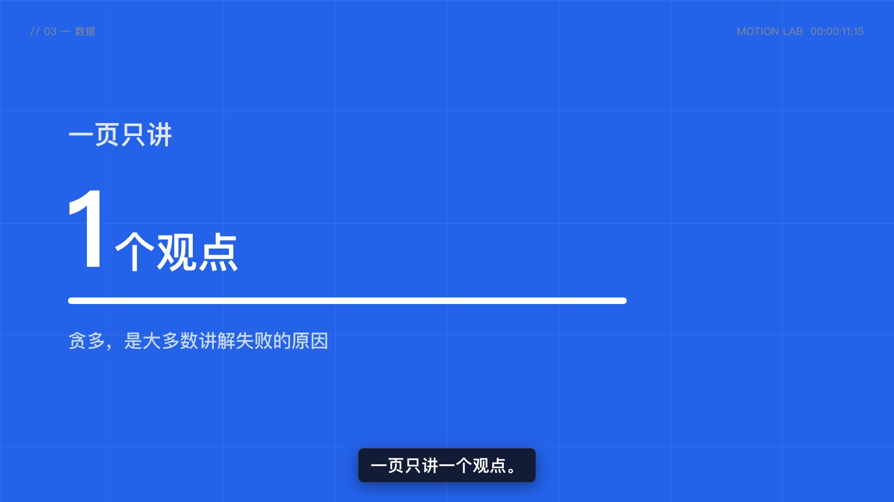
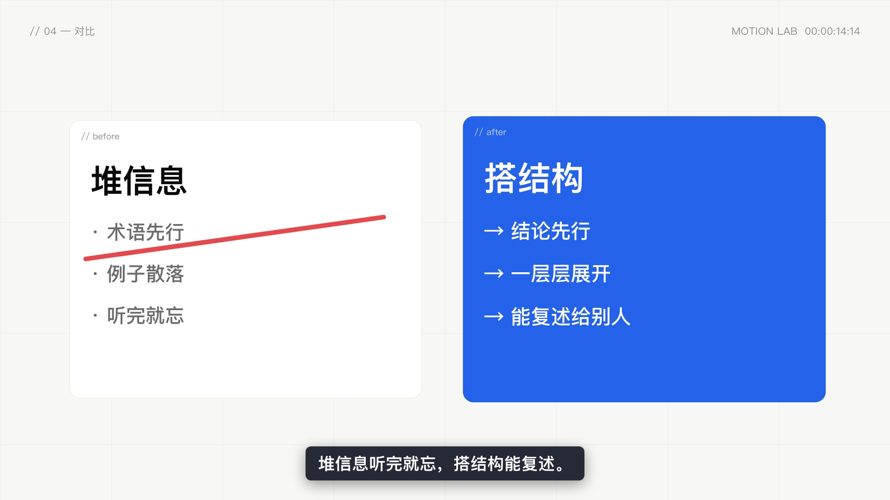
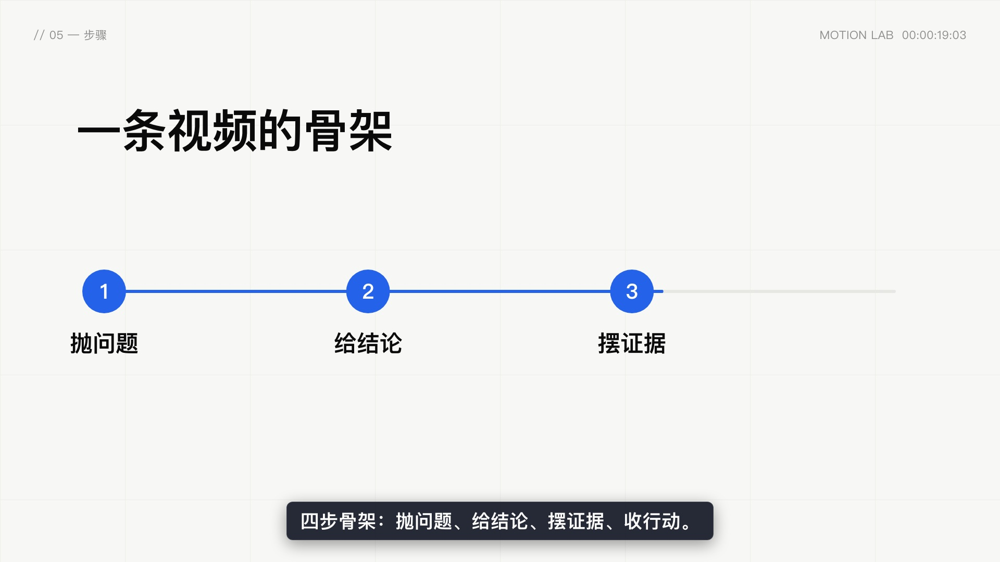
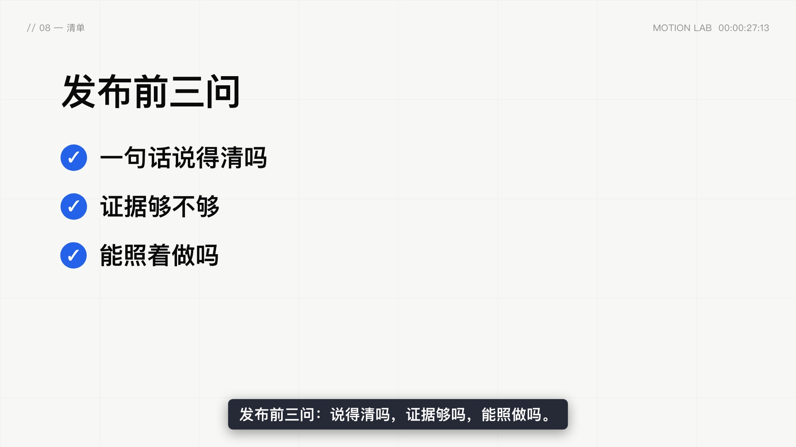
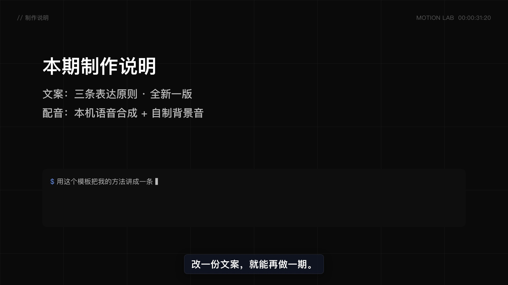

现代图文口播 · 参数化剪辑模板（逐句同步字幕） · 关键帧预览 · 1920×1080 @ 24/1fps
frame 0 · t=0.00sframe 73 · t=3.04s
frame 195 · t=8.13s
frame 279 · t=11.63s
frame 350 · t=14.58s
frame 459 · t=19.13sframe 561 · t=23.38s
frame 661 · t=27.54s
frame 764 · t=31.83sframe 804 · t=33.50s